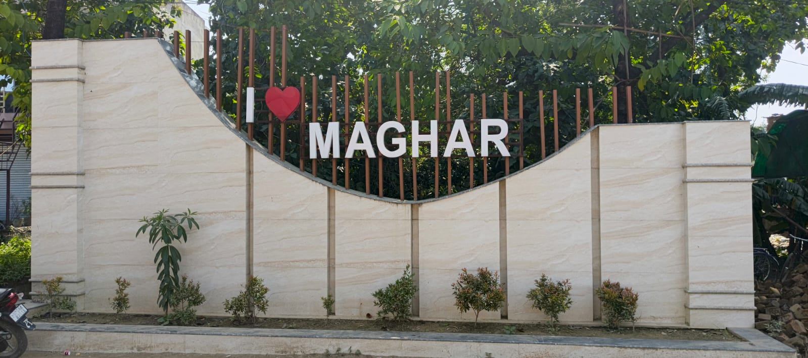
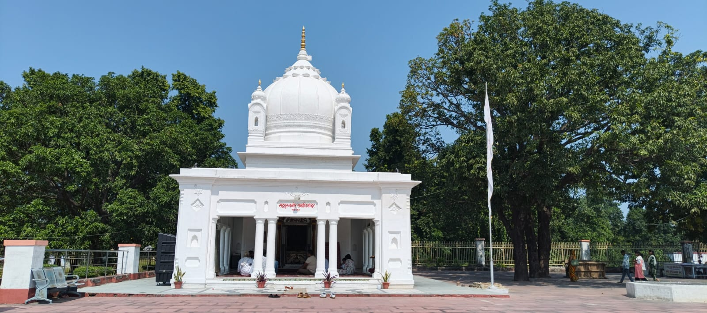
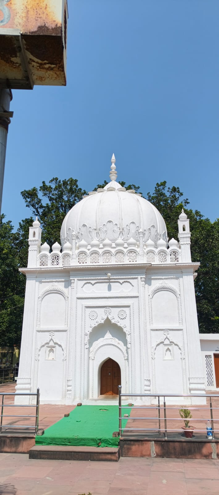
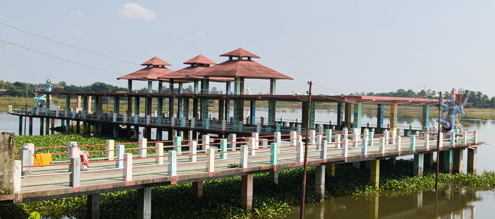
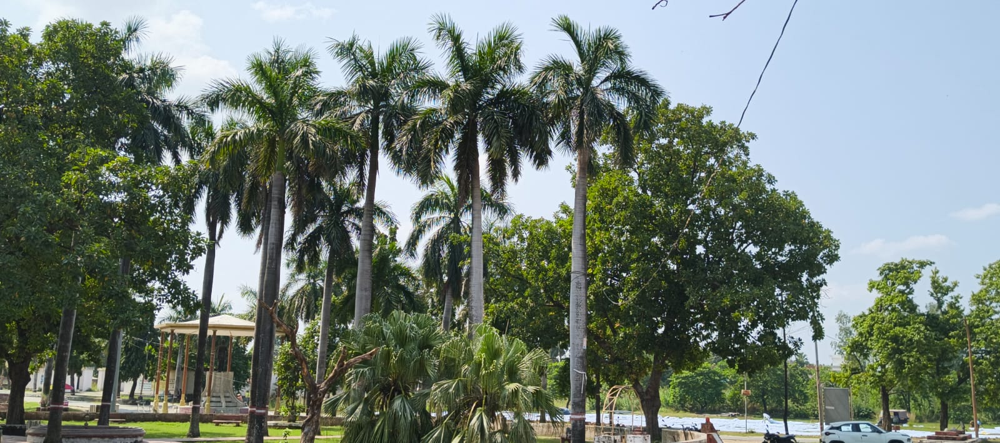
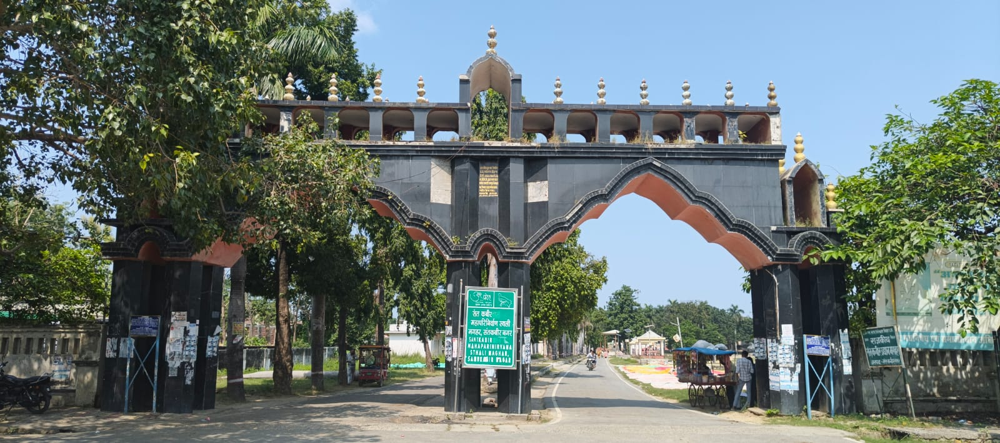

At a Glance
About Maghar
Maghar is a historic town and Nagar Panchayat in Sant Kabir Nagar district of Uttar Pradesh.
Maghar is closely associated with the 15th-century poet-saint Kabir, who spent part of his life here.
According to the Gorakhpur district administration, Kabir chose to spend his final days in Maghar to challenge the belief that dying in Varanasi was necessary for attaining moksha.
The historic site is known for the close presence of Kabir's Samadhi and the Muslim Mazaar.
Kabir's Message of Harmony
Kabir is remembered for his teachings that encouraged people to rise above religious divisions and live together in peace and harmony.
Things to See
Kabir's Mazaar
Visit the historic Muslim mazaar associated with Sant Kabir.
Kabir's Samadhi
The Samadhi stands close to the mazaar and represents the shared heritage of Maghar.
Kabir Heritage
Explore the place connected with the life and teachings of poet-saint Kabir.
Message of Harmony
Experience a historic place associated with peace and religious harmony.
Visiting Maghar
Maghar is a historic and religious destination visited by people interested in Kabir's life, teachings and heritage.
Specific daily visitor timings were not confirmed from the official district source. Check local information before travelling.
How to Reach Maghar
Find Maghar
Maghar, Sant Kabir Nagar, Uttar Pradesh, India.
Open Google Maps ↗️Tips for Visitors
- Respect the religious and historical importance of the site.
- Maintain cleanliness around the heritage area.
- Follow local visitor guidelines at the Samadhi and Mazaar.
- Keep adequate time to explore the Kabir heritage area.
- Check local information before planning your journey.
Explore Maghar





